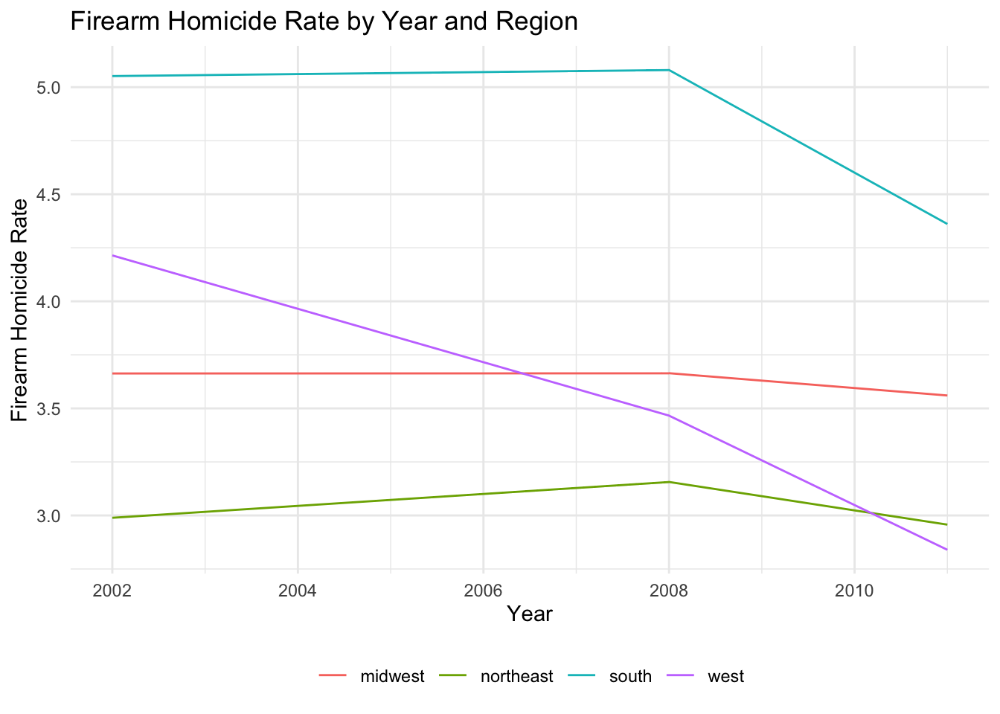

Warning: package 'viridis' was built under R version 4.4.2Warning: package 'sf' was built under R version 4.4.2Warning: package 'DT' was built under R version 4.4.2
Our data analysis is performed on the combined data from two datasets. One of these datasets is titled “The Effect of Prior Police Contact on Victimization Reporting…”, and it reports national data about civilian experience with the police from the DOJ’s National Crime Victimization Survey and the Police-Public Contact Survey. The other dataset, titled “Firearm Suicide Proxy for Household Gun Ownership” examines gun ownership rates and homicide rates for different racial groups in different states of the US. We want to use these datasets to better understand the racial disparities underlying police interactions and how the interactions might be shaped by gun ownership or crime statistics. Specifically, we were curious in how variations in the homicide rate among different racial groups in different regions of the US correlated with the rate at which civilians were arrested or experienced improper police interactions.
The measures we are most interested in analyzing are the rate of improper police interactions, the rate at which people are arrested, the homicide rate, and the relative gun ownership rate in different regions of the US. We want to determine how these measures are impacted by demographic factors, particularly race, education, household income, sex, and minority population.
Here are some questions that we seek to answer in this EDA:
How does the rate of improper police interactions vary among populations of different races? How does the homicide rate throughout the US vary by region and over time from 2002 to 2011? To what extent can variations in the homicide rate & gun ownership levels be explained by variations in racial demographics across different regions of the US? Do variations in the firearm homicide rate across different regions correlate with statistics about improper police behavior or arrests?
Modeling and Inference: We ran two models on our dataset. The first model was made solely on the data from the first dataset, and it examines the extent to which the probability of being arrested depends on household poverty, education level, sex, and race. Interestingly, strong correlations existed between the probability of being arrested and household poverty, education level, and sex, but not for race. A more detailed description of the correlation is included with the code used to generate the model farther down on this page, where summary statistics about the model are also included. The second model was ran on the combined dataset, and it examines the extent to which firearm homicide statistics can be explained by the racial demographic variations in different regions of the US.
Here, our Police Interaction dataset and all libraries are loaded.
Warning: package 'viridis' was built under R version 4.4.2Warning: package 'sf' was built under R version 4.4.2Warning: package 'DT' was built under R version 4.4.2The first step of our EDA involves examining the “PROPER” variable, a binary variable which displays whether or not the police behaved properly during each interaction. This binary variable is reported for 19,321 of the 105,273 total cases, with 1,853 reported cases of the police behaving improperly and 17,468 cases of the police reporting properly. A plot is generated here to show how the proportion of improper police actions differs among different race populations.
police_interaction <- read_rds(here::here("dataset/police_interaction.rds"))
region_labels <- c("1" = "Northeast", "2" = "Midwest", "3" = "South", "4" = "West")
police_interaction <- police_interaction %>%
mutate(REGION = factor(REGION,
levels = c(1, 2, 3, 4),
labels = c("Northeast", "Midwest", "South", "West")))
# UI Layout
ui <- fluidPage(
titlePanel("Improper Police Behavior by Race with Region Filter"),
sidebarLayout(
sidebarPanel(
selectInput("region", "Select Region:",
choices = c("All Regions", levels(police_interaction$REGION)),
selected = "All Regions") # Default to All Regions
),
mainPanel(
plotOutput("improperPlot")
)
)
)
# Logic
server <- function(input, output) {
output$improperPlot <- renderPlot({
# All Regions or specific region
filtered_data <- police_interaction %>%
filter(!is.na(PROPER)) %>%
{
if (input$region != "All Regions") {
filter(., REGION == input$region)
} else {
.
}
}
# Improper proportions and plot
filtered_data %>%
group_by(RACE) %>%
summarize(
improper_proportion = sum(PROPER == 0) / n()
) %>%
ggplot(aes(x = RACE, y = improper_proportion, fill = RACE)) +
geom_bar(stat = "identity") +
labs(
title = ifelse(input$region == "All Regions",
"Proportion of Improper Police Behavior by Race (All Regions)",
paste("Proportion of Improper Police Behavior by Race in", input$region)),
x = "Race",
y = "Proportion of Improper Conduct"
) +
theme(axis.text.x = element_text(angle = 45, hjust = 1))
})
}
shinyApp(ui, server)The plot shows (with filter on “All Regions”) that the “Black, Non-Hispanic” population experienced a much higher proportion of improper police interactions than all other populations, with about 15% of reported interactions classified as improper. Among “Hispanic” and “Other or multiracial, Non-Hispanic” populations, the proportion of improper police interacts was about 10%, while the rate of improper police interactions among members of the “White, Non-Hispanic” population was about 7%.
In making this observation, it is important to note that the proportions could be skewed due to the number of responses received for each group and the nature of data collection through a survey, which may have prompted individuals who experienced racial discrimination to be more likely to respond.
For data modeling, the data was split into two. 80% of the data was randomly selected for the training dataset and 20% was randomly selected for the testing dataset. The model attempts to predict whether someone would be arrested based on their race, years of education, if their household is living in poverty, and their gender.
We chose the variables of race, years of education, and poverty to construct our model because these variables are numerical or boolean values, are present in most or all of the participant data, and display the strongest correlation with the probability of being arrested. While other variables, such as the number of years being married, could have been used, variables like these are usually not present for many survey participants and don’t provide much correlation with the probability of being arrested.
We note that, although it is not necessary to actually test our model because it will not be used to make predictions, we decided to incorporate a testing dataset to simply examine the relationship between the predictors and the PROPER metric.
In the training set, the F-statistic is far over 1 and the p-values show over 95% confidence in all the response variables being significant.
Coefficients and p-values: Estimate Pr(>|t|)
(Intercept) 0.807141032 0.000000e+00
RACEHispanic 0.042910002 4.524554e-04
RACEOther or multiracial, Non-Hispanic 0.024230247 1.262961e-01
RACEWhite, Non-Hispanic 0.057335343 1.162388e-09
EDUCATION 0.004605994 1.544312e-05
HHPOV -0.017106677 4.861825e-02
MALE -0.023749979 5.902280e-06
R-squared:Multiple R-squared: 0.007908832 Adjusted R-squared: 0.0074252
F-statistic and p-value:F-statistic: 16.35298 on 6 and 12308 DF, p-value: 7.410766e-19 The logistic regression model was trained to predict whether an individual would report proper or improper police behavior based on a subset of predictors, including race, years of education, household poverty status, and gender. These variables were selected because they represent key demographic factors strongly associated with the likelihood of proper police behavior, as identified through EDA.
The model achieved an R-squared value of 0.008, indicating that it explains a very small portion of the variability in improper police behavior. While some predictors are statistically significant, their overall contribution to explaining the outcome is minimal. This suggests that other unobserved factors likely play a larger role in determining improper police behavior.
On the other hand, when looking at the variables outlining the racial demographic of the survey responses we notice that being Hispanic, Non-Hispanic multiracial, or White (Non-Hispanic) is associated with a slightly higher probability of police behaving properly compared to the baseline racial group (Black Non-Hispanic), with coefficients of 0.0413, 0.0331, and 0.0538, respectively, all of which are statistically significant (p-values of 0.000619, 0.033628, 7.03e-09 respectively). This shows that the Black Non-Hispanic race sees a statistically significant higher likelihood of reporting improper police behavior based on their race alone.
We also see a strong correlation for the predictors of education, household poverty, and gender. Individuals with more years of education are more likely to report proper police behavior, as indicated by a coefficient of 0.00386 (p-value of 0.000197). Household poverty shows a negative association with proper police behavior, with a coefficient of -0.0242 and a p-value of 0.00424. Additionally, males are significantly more likely to report improper police behavior compared to females, as indicated by a coefficient of -0.0277 (p-value 7.22e-08).
This model suggests that Black Non-Hispanic, lower-income, uneducated, males are the demographic most likely to experience improper behavior from a police officer during any given interaction.
The summary of this model denotes that there are very small p-values of less than 2.2e-16,indicating that the combination of predictors (the demographics including race, years of education, household poverty status, and gender) contributes meaningfully to explaining the likelihood of arrest.
The second dataset to be incorporated describes the number of homicides, the number of suicides, and the number of suicides done with firearms for whites & nonwhites within different states from 1949 to 2020.
This map represents the rate of homicides by firearm by state. There are different levels of colors to represent the homicide rate by state, and the diagrams are split into 2002, 2008, and 2011.
From this map, we notice that across the 3 years we seek to observe, it’s generally true that states within the southern and Midwestern regions of the United States have the highest rate of firearm homicide.
This is useful to understand since we can use this information to dig deeper into the causes behind negative police behavior, and fortify and further explain our bar chart and linear model describing the proportion of race vs. proper police behavior. Specifically, this may help us determine whether race or the level of neighborhood gun violence are more useful indicators for particular aspects of police behavior in our study.
The plot below shows a breakdown of the firearm homicide rates for each region across the years relevant to our analysis.

To deepen our analysis, we explored whether the rate of firearm homicides in a region or state-level factors could help explain variations in proper and improper police behavior. By combining the PROPER variable from the police interaction dataset with the fa_homicide_rate variable, we created models to examine how firearm homicide rates influence police behavior across different regions.
First, we visualized the average rate of firearm homicides for states with higher proportions of improper police behavior. This approach highlights how neighborhood violence may correlate with reported police misconduct.
`geom_smooth()` using formula = 'y ~ x'
The plot shows a slight positive trend, suggesting that states with higher firearm homicide rates tend to have higher proportions of improper police behavior. However, the relationship is not uniform across all regions.
To quantify this relationship, we modeled the binary PROPER variable against the fa_homicide_rate and regional demographic proportions. This analysis combines insights from both datasets to explore whether firearm homicide rates, demographics, and regions collectively influence police behavior.
Coefficients and p-values: Estimate Pr(>|t|)
(Intercept) 0.72947466 0.02808213
fa_homicide_rate -0.01763306 0.55358123
B_NH_PROP 1.70439477 0.31638794
HISPANIC_PROP 1.43526981 0.07857210
OTHER_MULTI_NH_PROP 0.42947248 0.73956531
regionnortheast -0.03802162 0.30553477
regionsouth -0.21447303 0.21967772
regionwest -0.16493963 0.19783890
R-squared:Multiple R-squared: 0.7712447 Adjusted R-squared: 0.3709228
F-statistic and p-value:F-statistic: 1.926562 on 7 and 4 DF, p-value: 0.2745619 The linear model results show that various predictors, including homicide rates and racial demographics, explain a portion of the variation in the proportion of improper police behavior. Here’s a closer examination of each predictor:
Intercept (Estimate = 0.7295, p-value = 0.0281): The intercept is statistically significant, suggesting that when all predictor variables are zero, the proportion of improper police behavior (PROPER_PROP) is significantly different from zero.
fa_homicide_rate (Estimate = -0.0176, p-value = 0.5536): The firearm homicide rate is not statistically significant (p-value > 0.05), suggesting that it does not have a strong direct effect on the proportion of improper police behavior in this model.
B_NH_PROP (Estimate = 1.7044, p-value = 0.3164): The proportion of Black non-Hispanic individuals is not statistically significant (p-value > 0.05), implying that it does not have a significant impact on the outcome in this context.
HISPANIC_PROP (Estimate = 1.4353, p-value = 0.0786): While not quite reaching the 0.05 threshold, this variable is marginally significant at the 0.1 level. This suggests a possible relationship between the proportion of Hispanic individuals and improper police behavior, warranting further exploration.
OTHER_MULTI_NH_PROP (Estimate = 0.4295, p-value = 0.7396): The proportion of individuals from other multi-racial non-Hispanic groups is not statistically significant, implying that this demographic does not appear to significantly impact improper police behavior.
region (northeast, south, and west): The regional dummies (compared to the baseline region) show that being in any of the other regions does not significantly affect the proportion of improper police behavior:
R-squared = 0.7712: The model explains approximately 77% of the variation in improper police behavior. This is a relatively high value, suggesting that the model captures a significant portion of the underlying patterns.
Adjusted R-squared = 0.3709: The adjusted R-squared value is much lower, indicating that while the model explains some of the variance, a substantial proportion remains unexplained. This suggests that there are likely additional factors influencing improper police behavior that have not been captured by the current model.
F-statistic = 1.9266, p-value = 0.2746: The overall F-test shows that the predictors together do not significantly explain the variance in improper behavior at the 0.05 significance level. This implies that while some individual predictors might have marginal significance, the model as a whole is not a strong predictor of the outcome.
The analysis highlights the complexity of understanding improper police behavior and the factors that might contribute to it. The relatively high R-squared value suggests that certain aspects, particularly demographic and regional factors, may partially explain the variation in improper behavior. However, the lower adjusted R-squared value and non-significant predictors indicate that other systemic or situational factors might play a critical role but are not captured in the current model.